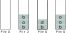

Exercices#
On utilise l’interface de la pile rappelée ci-dessous:
creer_pile()fonction qui crée une pile vide.est_vide(P)fonction qui prend en paramètre une pilePet renvoie un booléen permettant de savoir si la pile est vide ou non.empiler(P,e)fonction qui prend en paramètre une pilePet un élémenteet l’ajoute au sommet de la pile.depiler(P)fonction qui prend en paramètre une pilePet renvoie le sommet de la pile en le supprimant.
Exercice 1#
On empile les nombres 17, 9 et 12 dans cet ordre dans une pile vide P.
Quel est le sommet de la pile
P?Représenter la pile
Ppar un schéma.Écrire, à l’aide des primitives de l’interface, la suite d’instructions qui permet de créer et remplir la pile
P.On dépile deux fois la pile
P. Écrire les instructions et donner son contenu.Écrire une instruction qui empile la valeur
31dans la pileP.Écrire un algorithme qui dépile la pile
Ptant qu’elle n’est pas vide.
Exercice 2#
On donne les instructions python suivantes. Représenter les différents états de la pile.
P = creer_pile() P = empiler(P,3) P = empiler(P,7) s = depiler(P) t = s + depiler(P) P = empiler(P,t)
On a représenté les états d’une pile
Q:Donner les instructions Python conduisant à ses différents états.
Exercice 3#
Écrire la fonction renverse qui prend en paramètre une pile et renvoie la pile avec son contenu inversé. On en donne une illustration ci-dessous:

On utilisera uniquement des structures de piles et rien d’autre.
Exercice 4#
Soit P une pile déjà créée et contenant des nombres entiers. La pile peut être vide après exécution des fonctions.
Écrire la fonction
sommequi prend en paramètre une pile et renvoie la somme de toutes les valeurs contenues dans la pile. Dans le cas d’une pile vide, la somme renvoyée est nulle.Écrire la fonction
hauteurqui prend en paramètre une pile et renvoie le nombre d’éléments contenus dans la pile.Modifier les fonctions
sommeethauteurpour que la pilePretrouve son état initial après exécution des fonctions.